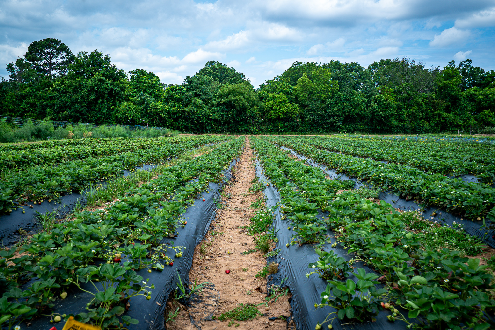
Spring
Fresh Beginnings
Strawberries and early berries
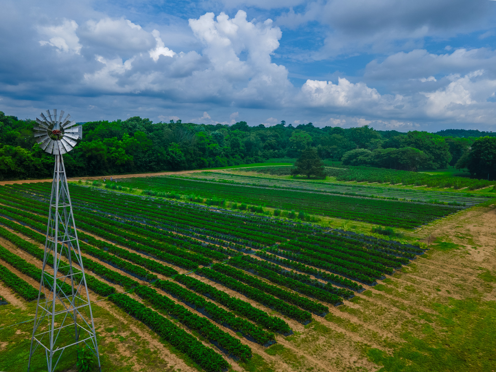
Fayetteville, Arkansas
Sweet strawberries. Juicy berries. Perfect pumpkins. Timeless traditions grown with care since 1959.
A farm for every season
From the first berries of spring to fall pumpkins and family traditions, there is always something worth looking forward to at the farm.

Strawberries and early berries
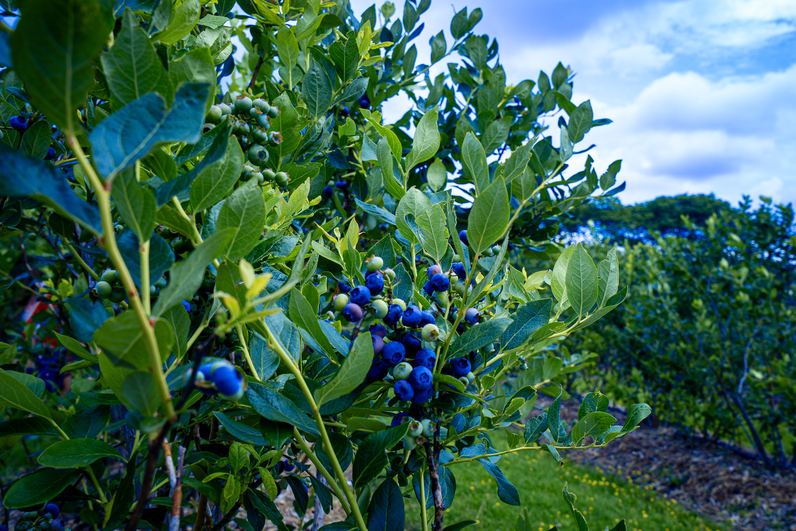
Blueberries, blackberries, and raspberries
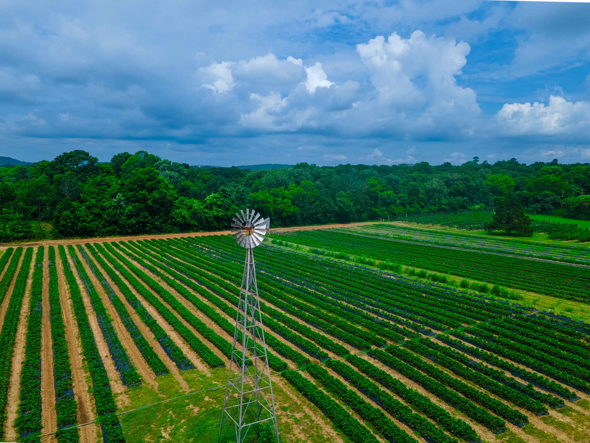
Pumpkins, gourds, mums, and more
Since 1959
For more than six decades, Reagan Family Farm has been a place where fresh food, open skies, and family traditions come together. What started as a working farm has grown into a seasonal destination for families across Northwest Arkansas.
Our Story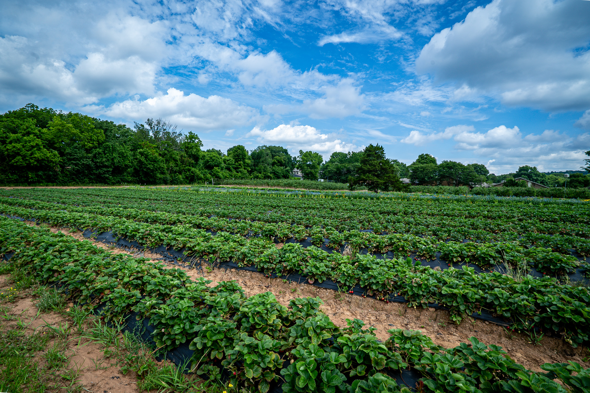
What's in season
Spring favorite
Summer favorite
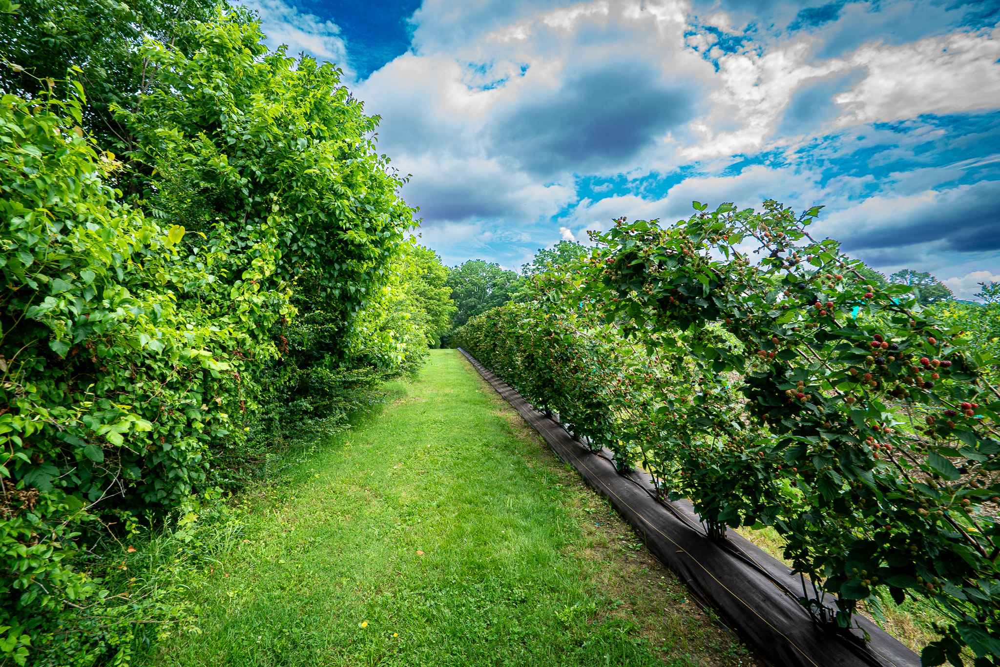
Seasonal harvest
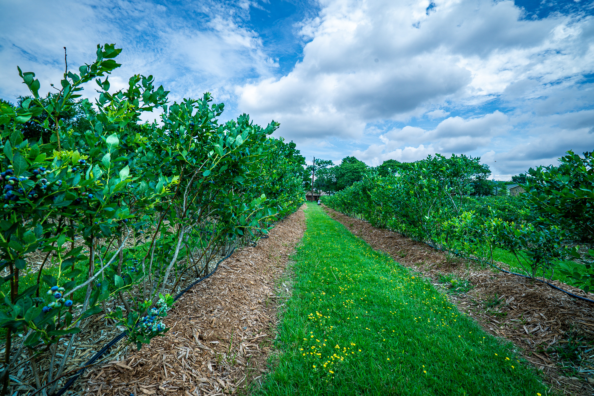
Seasonal harvest
Fall tradition
More than a market stop
Walk the rows, pick your favorites, meet a few farm animals, and spend a little time outdoors. Reagan Family Farm is a place to slow down and make the kind of memories families come back for.
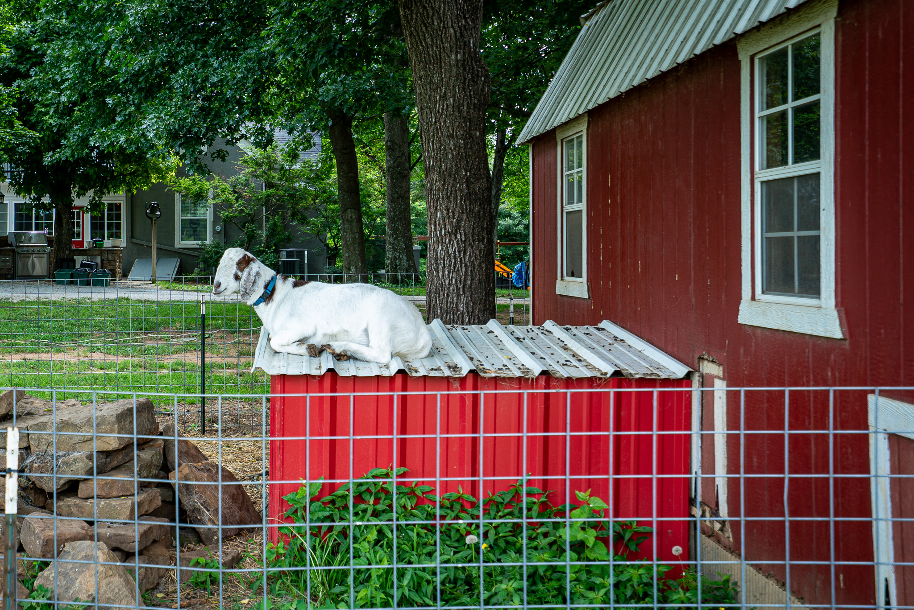
Life at the farm
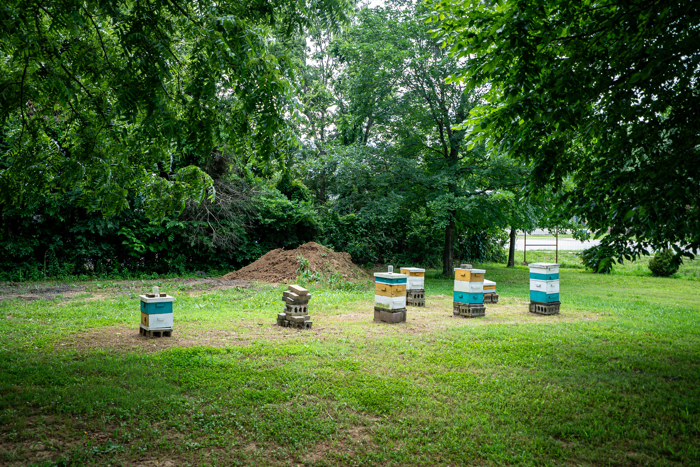
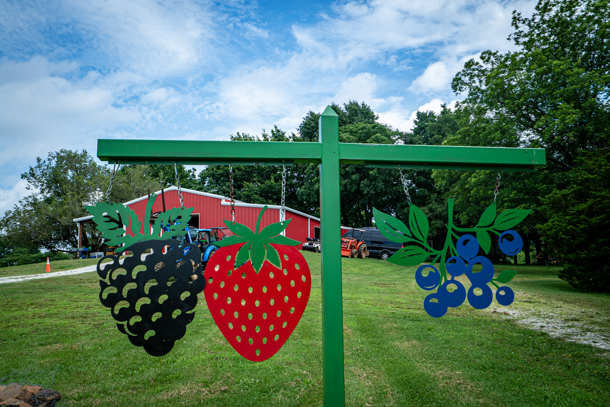
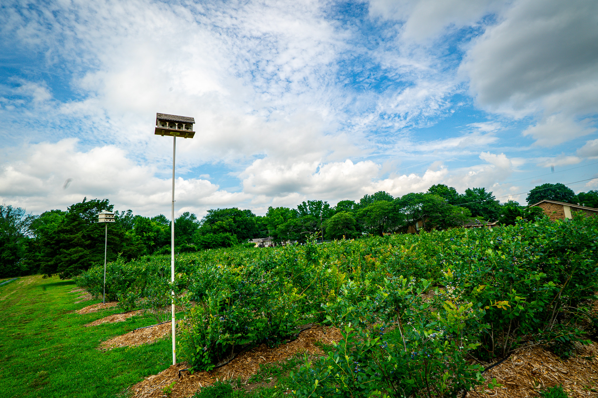
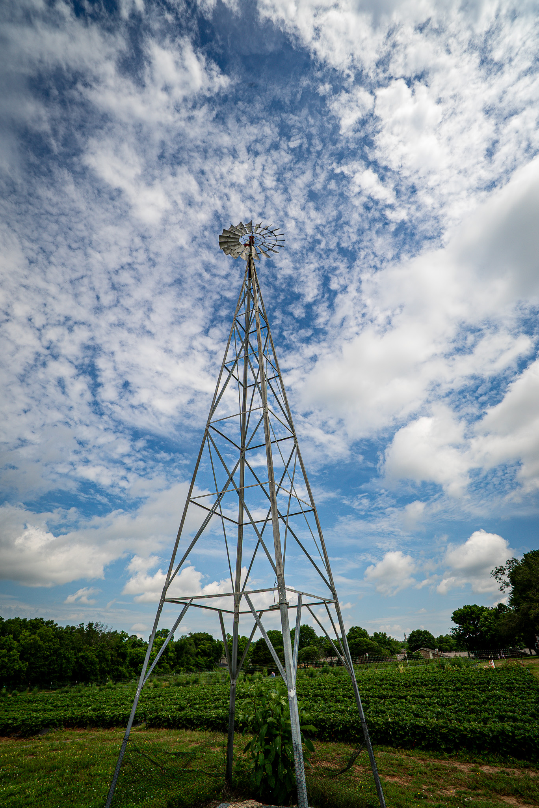
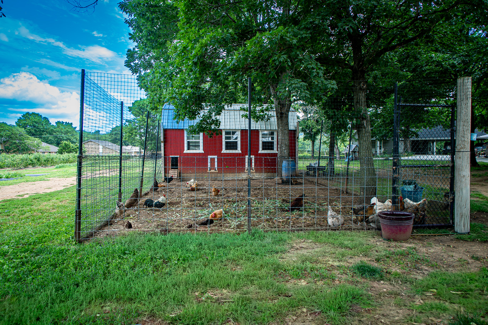
Plan your visit